すべてのコンテンツ
140 ページ

発電機
11
風力タービン
風力タービンは風からEUを生み出します — 燃料も太陽も不要、高さと天候だけがものを言います。 高く建てれば報われ、地面に置けばほとんど無意味です。塔に登り、雷雨を恐れない者に報います。
LV
スカイミル
スカイミル (Sky Mill) はスカイブランチの第2段階 (T2) で、基本風力タービンの進化形です。 開放空で風からEUを生み出しますが、ベースは高さと共に2倍速く成長し (山は1段階16ブロックではなく8ブロックで到達)、 12 EU/FE/t の上限に達します。天候の影響は他の風力タービンより弱く (雨 ×1.25、雷雨 ×1.5) —…
LV
テンペストミル
テンペストミル (Tempest Mill) はテンペストブランチの第2段階 (T2) で、基本風力タービンの進化形です。 ベースはT1よりわずかに高い (1段階16、上限 6) ですが、天候倍率が強化されています: 雨 ×2、雷雨 ×3.5、全体上限 24 EU/FE/t (現実に到達可能なピークは21)。…
LV
水車
水車は流れる水で回り、24時間動作します — 夜でも雷雨でも関係ありません。燃料を要求せず、 タンクもポンプも不要です: 車輪の脇を流れる水路を作れば、水が流れている限りEUを生み出します。
LV
発電機
発電機は固体燃料 — 石炭、木炭、石炭ブロック、バニラのかまどで燃えるものすべて — を燃やしてEUに変えます。 太陽も風もない時に頼れる、気の利かない安定源です: 昼夜・天候を問わず、ただ動きます。
LV
地熱発電機
地熱発電機は石炭の代わりに溶岩を燃やします。通常の発電機の2倍強力で、 溶岩はポンプで供給できるため、燃料を手運びする必要がありません。完成した発電機から組み立てるため、 アップグレードであり、最初のエネルギー源ではありません。
LVソーラーパネル
ソーラーパネルは最初のエネルギー源です。空の見える場所に置けば、昼間に少しずつEUを生産し、最初の機械を動かすのに十分な電力を賄えます。
LV
日光ソーラーパネル
日光ソーラーパネルは基本パネルから成長した、昼用ブランチの第2段階です。 4倍強力で、これまで通り昼間・開放空でのみ動作し、夜には何も生産しません。
LV
月光ソーラーパネル
月光ソーラーパネルは日光ソーラーパネルの夜用の鏡像、夜用ブランチの第2段階です。 夜間、開放空でEUを生産し、昼間は何も生産しないため、暗闇が来ても機械が止まりません。
LV
避雷針発電機
避雷針発電機は、モッド内で唯一「流れ」ではなくイベントで動く発電機です。 ただ立って悪天候を待ちます。雨の日、とりわけ雷雨のときに落雷を受け、その1発が 20 000 EU/FE — 地熱発電機の溶岩バケツ1杯を上回ります。
LV
クリエイティブエネルギー源
クリエイティブエネルギー源は、決して尽きないブロックです。燃料を燃やさず、太陽を待たず、天候にも左右されません。求められただけを、ティックごとに、無限に供給します。

エネルギー貯蔵
4
充電ステーション
充電ステーションはブロックの高さ 4 分の 1 の薄いプレートで、プレイヤーがただ乗るだけです。乗っている間、ステーションはすべての装備を一気に充電します：ホットバーとバックパック内のツール、左手のアイテム、そして装着しているエネルギーパック、ジェットパック、フラックス織一式です。
LV
エネルギー凝縮器
エネルギー凝縮器は、ゆっくり回る発光する球を内側に抱えた枠状のブロックです。本来なら失われる電力を受け止めます。 発電機が機械の消費を上回ったとき、その余剰はふつう消えてなくなります。凝縮器はそれを蓄え、蓄えた分をひとつの アイテム——エネルギー塊——として返します。
LV
強化エネルギー貯蔵庫
強化エネルギー貯蔵庫は貯蔵系列の第 2 段階で、エネルギー貯蔵庫と同じ役割ですが、ティアが 1 つ上です。100 000 EU/FE を保持し、32 ではなく 128 EU/FE/ティックで受け取り・送出します。
MVエネルギー貯蔵庫
エネルギー貯蔵庫はこのモード最初の貯蔵ブロックで、発電機から EU/FE を蓄え、機械へ送り出します。ソーラーパネルの昼間の発電を夜通し機械へ給電できるのは、このブロックのおかげです。
LV
エネルギー送電
8
スズケーブル
スズケーブルはモードで最も安価な導線で、ケーブル階段の最初の 1 段です。細い（銅の 12 に対して 8 EU/FE/ティック）ですが、エネルギー損失は 3.3 分の 1 の速さ——ブロックあたり 0.02 に対して 0.006——で進みます。
LV
絶縁スズケーブル
絶縁スズケーブルはスズケーブルのゴム強化版です。スズの細いパラメータ——8 EU/FE/ティックと 8 EU/FE/パケット——を保ちつつ、減衰を半分——0.006 から ブロックあたり 0.003——に減らします。ソーラーファームやその他の遠距離小流量向けに最も経済的な導線です。
LV銅ケーブル
銅ケーブルはゲーム序盤の主力ケーブルで、初期チェーン——ソーラーパネル → 貯蔵库 → 鉱石粉砕機——の導線です。隣接するブロックを一本のラインに繋ぎ、LV エネルギー（最大 32 EU/FE/ティック）を伝えます。長い路線では途中でエネルギーが失われ——線が長く流れが大きいほど損失が増えます。減衰は指数関数的で、任意の長さの線も正のパケットから最低 1 EU/FE…
LV
絶縁銅ケーブル
絶縁銅ケーブルは銅ケーブルのゴム強化版です。銅のスループット 12 EU/FE/ティックとパケット上限 32 EU/FE を保ちつつ、減衰を半分——0.02 から ブロックあたり 0.01——に減らします。石油—硫黄チェーンと加硫機を習得した後の長距離路線向けの主力 LV 導線です。
LV
金ケーブル
金ケーブルはケーブル階段の最上位で、モード初の MV ティアの導線です。48 EU/FE/ティック——銅の 4 倍——を運び、パケット上限を 128 EU/FE（LV の 32 に対して）まで引き上げます。
MV
絶縁金ケーブル
絶縁金ケーブルは金ケーブルのゴム強化版です。金のスループット 48 EU/FE/ティックとパケット上限 128 EU/FE を保ちつつ、減衰を半分——0.03 から ブロックあたり 0.015——に減らします。接触安全な唯一の MV 導線で、石油—硫黄チェーンと加硫機を習得した後の拠点内配線の主な選択肢です。
MV
エレクトラムケーブル
エレクトラムケーブルは HV ティアの初の導線です。ティア自体は空ではありませんでした：MOD-091 以降、テレポーターステーション——モード唯一の HV 消費者——が動作していましたが、金（MV）ケーブル以外で給電する手段がこれまでありませんでした。このケーブルは、より以前の「ガラスファイバー EV…
HV
絶縁エレクトラムケーブル
絶縁エレクトラムケーブルはエレクトラムケーブルのゴム強化版です。エレクトラムのスループット 192 EU/FE/ティックとパケット上限 512 EU/FE を保ちつつ、減衰を半分——0.005 から ブロックあたり 0.0025——に減らします。これはモードで最も低い損失で、かつての記録である絶縁スズケーブル（0.003）の半分、階段の先行者である裸エレクトラムの 4…
HV
原子力
13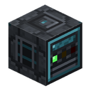
原子炉制御装置
原子炉制御装置は、シェルで唯一の「賢い」ブロックであり、この部屋にある唯一の機械です。部屋を 建てているあいだは、自分の周囲から部屋を見つけ、検査し、どこが何故だめなのかを告げます。部屋が 閉じれば、それ自身が原子炉になります。原子炉カラムを集め、発電量と発熱を計算し、水を沸かし、 カラムの各段の流体を組み直し、燃料棒を消耗させ、EU/FE を渡します。
HV
燃料被覆管
燃料被覆管とは、ウランの入っていない燃料棒です。遮蔽ベースに 載った鉄の外筒で、燃料以外はすべて同じもの。入手経路はふたつ——作業台でのクラフトと、燃料棒が 144 000 EU/FE を出し切ったあとに原子炉カラムが返してくるもの—— で、どちらも同じレシピへ向かいます。被覆管 + 濃縮ウラン 1 個 = 装填済みの燃料棒。
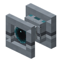
蒸気ノズル
蒸気ノズルは原子炉の排気口です。原子炉カラムで沸いた水は蒸気に なり、蒸気はカラムにたまり、どこかへ逃がさなければなりません。ノズルがその「どこか」です。普通の 流体パイプで蒸気を受け取り、自分が向いているブロックへ吹き出し、 蒸気はそこで消えます。ここから何かを取り戻すことはできません。

原子炉ボタン
原子炉ボタンは原子炉一式でいちばん小さなブロックであり、これが無いと部屋がただの罠になる唯一の ブロックでもあります。エアロックドアはレッドストーンのパルスでしか 開きません。外からなら何でもパルスを送れますが、内側から送る手段はありません——密閉された部屋は…

原子炉カラム
原子炉カラムは、原子炉に燃料を入れる場所であり、原子炉を冷やす場所でもあります。燃料棒を 4 本立てられる透明なラックで、原子炉室の内側に置き、 燃料棒を持って右クリックすれば装填、素手で右クリックすれば取り出し です。メニューは一切ありません。

原子炉ランプ
原子炉ランプは、光る原子炉ケースです。最初の実機プレイでいちばん はっきりした問題から生まれました。組み上がった部屋は開口部のひとつも無い密閉容器で、中は真っ暗 です。光は何かで持ち込むしかありませんが、普通の松明は壁に挿せません。松明はシェルのブロックでは なく、そのマスはスキャナーにとって破れになるからです。

原子炉ケース
原子炉ケースは原子炉室の壁・床・天井です。装飾ブロックでも「補強された石」でもありません。 原子炉の部屋はスロットの並んだ 1 個のブロックではなく、実際に 建てる構造物であり、ケースはそれを積むための材料です。普通の石も鉄ブロックもバニラのガラスも、 部屋のスキャナーにとっては空気と同じくただの穴です。

原子炉ガラス
原子炉ガラスは、向こうが見える原子炉ケースです。部屋のスキャナー にとっては立派な壁で、ガラスの入ったマスも密閉されており、常識的な大きさの窓なら成形の邪魔には なりません——ガラスがシェルの 30 % を超えない限りは。
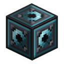
原子炉入口
原子炉入口は、密閉した建物なら必ずぶつかる問題を解きます。壁に穴を開けずに、どうやってパイプを 中へ通すか。シェルを突き抜けた普通のパイプは、まさにその穴そのものです——部屋のスキャナーは、許され た 7 種以外のどのブロックも破れと読むからです。入口はその 7 種のひとつです。外側にパイプをつなぎ、 内側にもう 1 本つなぎ、それでいて壁は無傷のままで、…

原子炉出力端子
原子炉出力端子は、ケーブルを挿すソケットです。原子炉入口と対を なします。あちらから水が入り、こちらから電気が出ていきます。
HV
燃料棒
燃料棒は原子炉の唯一の燃料であり、このモッドのウランの流れの終点です。 燃料被覆管と濃縮ウラン 1 個から組み立て、 原子炉カラムに右クリックで差し込みます——1 本ずつ、ラック 1 つに 最大 4 本。そこでちょうど 144 000 EU/FE を出し切り、そのあとふたたび空の被覆管になります。

原子炉エアロックドア
原子炉エアロックドアは高さ 2 マスのシェルのブロックであり、部屋に入る本来の手段です。ドア 自体は必須ではありません。自分を塗り込めて掘り戻すのも原子炉の正当な運用であり、シェルに求め られるのは密閉だけです。ただしドアが置かれているなら、本物の通路を形成しなければなりません。…
⚡
遮蔽チェスト
遮蔽チェストは 36 スロットの鉛張りの箱で、放射性物質を誰も被曝させずに置いておける、 世界で唯一の場所です。エネルギーは不要です。

マシン
15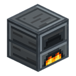
鉄のかまど
鉄のかまど は、バニラのかまと 電気かまど の間に位置する改良型の燃料かまどです。バニラより速く、バニラと同じものを製錬しますが、EU/FE ではなく固体燃料（石炭、木材、木炭…）で動きます。エネルギーネットワークをまだ組んでいないが、製錬を加速したい初期のプレイヤー向けのアップグレードです。
LV
製材機
製材機 は木材加工用の LV マシンです。原木（または板材）を手作業クラフトより 多い産出 で製材し、4種類の異なる製品に切ることもできます。切替可能な4つのモード（インターフェースのボタン）があります：板材 / 棒 / ハーフブロック /…
LV粉砕機
粉砕機 は鉱石倍化を行う初期の機械です。鉱石や金属を投入すると粉に粉砕し、掘った鉱石ブロック1つから粉 2つ を産出します。これこそが粉砕機を作る目的であり、ケーブルを引く価値のある最初の機械です。
LV
圧縮機
圧縮機 は LV マシンで、原料をより密度の高い形に圧縮します：金属の粉をインゴットに、石炭や宝石の粉を元のアイテムに、氷や雪をより密度の高いブロックに、サトウキビを紙にします。主な役割は 非金属 の鉱石倍化サイクルを閉じることです。石炭・ダイヤモンド・エメラルド・ラピスラズリの粉を再び利用可能なアイテムに戻せる唯一の機械なので、「鉱石 → 粉 ×2 →…
LV
抽出機
抽出機 は LV マシンで、原料から有用な素材を引き出します：花から染料、カボチャやスイカから種、ブレイズロッドからブレイズパウダー、砂利から火打石を得ます。ほぼ常にバニラの方法より有利です。例えば花からは作業台の1個ではなく染料 ×2 が得られるため、ホッパー式の自動ファームに便利な拠点になります。
LV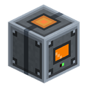
電気かまど
電気かまど はバニラのかまどの完全な電気版です。バニラのかまと 同じものすべて を製錬します — 鉱石、食料、ガラス、丸石 — ただし燃料の代わりに EU/FE で稼働し、2倍の速さで動きます。バニラのレシピに加えて、モッド独自のレシピ、とりわけ 粉 → インゴット を追加しており、これが 粉砕機 が始めた鉱石倍化サイクルを閉じます。
LV
合金炉
合金炉 は、モッドで初めて複数の異なる素材を1つの新しい素材に統合する機械です。入力スロットが3つあり、すべて対等です。かまどは投入されたインゴットの組み合わせ全体を見て、どのスロットに何が入っているかは見ません。
LV
電気ヒーター
電気ヒーター は 加硫機 のすぐ下に置き、最大の熱レベル — 3 — を与えます。つまり、焚き火の上でのゴム1個ではなく、材料1回分からゴムが3個産出されます。
LV
重合機
重合機 はモッド初の、アイテムではなく 液体 を消費する機械です。内部には10バケツ分の石油タンクがあり、1回の操作で正確に1バケツを消費して生ゴムを1つ産出します。生ゴムはその後 加硫機 で硫黄の粉と合わせられます。
LV
加硫機
加硫機 は石油チェーンの仕上げです：生ゴム1つと硫黄の粉4つをゴムに変えます。機械は EU/FE の供給と、その真下に熱源がある場合にのみ動作します。
LV
電解槽
電解槽は LV のめっき機械です：繊維と銀の粉を水中に浸して電流を通し、銀が繊維の上に導電性の筋として析出します。出力は フラックス糸 で、フラックス織布素材の半成品です。これはモッド初の、アイテム と 液体を同時に消費する機械で、EU/FE 防具ラインへの入り口です。
LV
組立機
組立機 はモッド初の MV マシンであり、64スタックの手作業クラフトの終わりです。作業台のレシピ（組立設計図 に記録したもの）を記憶し、原料とチャージがある間それらを連続的に生産します。レッドストーンは不要 — 機械は自律的に動作します。
MV
缶詰機
缶詰機は食料を缶に詰める機械ではありません。食料を「食料価値」まで煮詰め、それを同一のレーション に注ぎ直します。何を入れても出てくるのは同じアイテム——つまり手持ちの食料がすべて一つのスタックに まとまります。
LV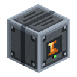
部品修理台
部品修理台は、摩耗した風車ローターと 水車ホイールを、新しく作り直す代わりに修復します。 1 回の修理で摩耗はゼロに戻り、費用はその等級の材料1 個と EU/FE——そのかわり、その部品の 最大耐久値が恒久的に元の値の 20 % だけ下がります。
LV
熱遠心分離機
熱遠心分離機は鉱石倍化の第2段階です。粉砕機はすでに鉱石ブロック1個を粉2個に変えていますが、遠心分離機はその粉をさらに2つに分割してウラン精鉱にし、ウラン精鉱は圧縮機で圧縮されます——2個で濃縮ウラン（U-235）1個です。ライン全体の結果として、鉱石ブロック1個からウラン精鉱4個、つまり濃縮ウラン2個が得られます。そのまま精錬すればインゴット1個です。
LV
液体マシン
2ポンプ
ポンプは液体を運ぶ EU/FE 駆動の LV 機械です。ワールド内の任意の液体源を（自分の正面のブロックから始め、 流れる液体を伝ってさらに）見つけるか、または隣接するタンクから液体を取り出し、10 バケツ の内部 タンクに溜め、自らさらに先 — 任意の隣接する受け手タンク — へ押し出します。タンクは 任意の 液体を…
LV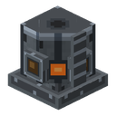
蒸留塔
蒸留塔 は高さ3ブロックの塔で、モッドで最も背の高い機械にして最初のマルチブロックです。塔は同じセグメントを3つ積み重ねて組み上げます。内部には3つのタンクがあります：中段に生の 石油 を注入し、上段には軽い目的フラクションの ディーゼル が凝縮し、下段には重い残渣の 重油…
LV
アイテム輸送
1

液体輸送
1

液体貯蔵
1
素材
18
スズ鉱石
スズは本modで最初の金属であり、LVティアの基盤です。最初のマシンを動かすワイヤーと回路の素材になります。鉱石は中程度の深さの石と深層岩に現れ、石のツルハシ以上で採掘できます。

硫黄鉱石
硫黄はゴムの加硫用の、序盤で採掘できる非金属です。鉱石は石と深層岩に現れ、石のツルハシ以上で採掘して粗硫黄を得られます。粉砕機は鉱石ブロック1個または粗硫黄1個を粉2個に変え、通常の炉は倍化なしで粉1個を生み出します。

銀鉱石
銀は本modで希少かつ深層の金属で、エレクトロニクス用に予約されています。MVティアの回路やコンポーネントを組み立てる材料になります。鉱石は石と深層岩に現れ、スズより深く、はるかに稀です。石のツルハシ以上で採掘できます。

ニッケル鉱石
ニッケルは本modで最も乏しく最も深くにある金属で、MVティアへの入り口として予約されています。MVマシンのケースや高度な回路の合金材料になります。鉱石は石と深層岩に現れ、銀よりもさらに深く、さらに稀です。石のツルハシ以上で採掘できます。
ウラン鉱石
ウランは本modで最も希少な金属で、原子力トラック（RTG、原子炉、濃縮）のために予約されています。鉱石はワールドの最下層付近に微小な鉱脈で現れ、他の鉱石と異なり鉄のツルハシ以上が必要です。木、金、石のツルハシではドロップしません。

パラジウム鉱石
パラジウムは、本Modでネザーから採掘する初めての、そして現時点で唯一の素材です。鉱石はこの次元の下層に小さな鉱脈として生成され、採掘にはダイヤモンドのツルハシが必要です——鉄で足りるウランより一段階上になります。
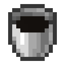
石油
石油は本modで最初の液体であり、クラフトにも精錬でも作れない唯一の資源です。ひたすら探すしかありません。ワールドには湖として存在し、大半は地下深くに、時に地表に染み出すように現れます。埋蔵量は有限です。汲み取られた石油ブロック1つごとに永久に消滅し、水のように再生することはありません。

青銅インゴット
青銅は本modの4種の合金の中で最も安価かつ最多量の合金です。合金炉で銅とスズから精錬されます。炉を建てる頃には、この2種の金属は通常十分に蓄積されています。
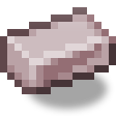
白銅インゴット
白銅は、合金炉で精錬される、銅とニッケルを1対1で配合した合金です。4種のレシピの中で最もシンプルで、各金属インゴット1個ずつ、倍率もありません。

インバーインゴット
インバーは、合金炉で精錬される、鉄とニッケルの個別生産合金です。鉄は常に手元にありますが、ニッケルは本modで最も乏しい金属であるため、インバーの生産速度はもっぱらニッケルに依存します。

エレクトラムインゴット
エレクトラムは、合金炉で精錬される、金と銀を1対1で配合した合金です。素材的に見れば炉のレシピの中で最も高価で、入力の2種の金属はいずれも価値が高く、倉庫で「余り気味」になるものではありません。

焼き入れ鉄ブロック
焼き入れ鉄ブロックは収納ブロックです。焼き入れ鉄インゴット9個を1つのフルサイズブロックに圧縮します。チェストのスペースを節約するためのもので、インゴット9スタックの代わりにブロック1スタックにできます。

焼き入れ鉄の外装板
焼き入れ鉄の外装板は、焼き入れ鉄の板4枚から作る装飾用建築ブロックです。画面とラインが入った「テクパネル」の外観で、焼き入れ鉄板をハイテクな内装材として活用できます。サイクルは可逆的（ブロック → 板4枚）で、ロスはありません。

銀の外装板
銀の外装板は、銀板4枚から作る装飾用建築ブロックです。角にボルトのついた、整った金属タイル2×2の外観で、銀板を内装材として活用できます。サイクルは可逆的（ブロック → 板4枚）で、ロスはありません。

ディーゼル
ディーゼル は石油蒸留の軽質フラクションで、蒸留塔 の目的生成物です：原油1バケツごとに 700 mB 得られます。ワールドには存在せず、唯一の入手源は蒸留塔です。金色がかった黄色でさらさらしており、石油と違い、ワールドで燃えず、溺れさせることもありません。こぼれたディーゼルには落ちてしまいます —…

重油
重油 は蒸留の重質残渣です：石油1バケツごとに 200 mB が 蒸留塔 の下段タンクへ流れ落ちます。粘稠で暗褐色。体積のわりに手間が多く、見返りは少ない —…
Steam
蒸気は原子炉室の作動流体です。原子炉が生み出し、蒸気ノズルが逃がし ます。本モッドの流体で唯一、ワールド上の姿を持ちません。蒸気の水たまりも蒸気ブロックも存在せず、バケツ で汲むこともできません。タンクとパイプの内側、つまり原子炉室が送り込んだ場所にだけ存在します。
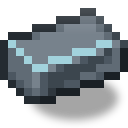
遮蔽合金インゴット
遮蔽合金は本modの5番目の合金であり、誕生時から大口の消費先を持つ唯一の合金です。原子炉ルームはまるごとこの合金で組まれています。合金炉がパラジウムと焼き入れ鉄——本modで最も希少な金属と最も安価な金属——から精錬します。

農業
3
支柱
支柱は蔓性植物の支柱で、モッド初の農業作物です。今日は 綿 が育ち、これは糸の供給源としての クモに代わるもので：モブから叩き出すのでなく農場で育てます。名前は意図的に汎用です — 支柱は将来の植物も 見込んでいます。

ガーデンドローンステーション
ガーデンドローンステーションは 1×1 のドックブロック（ロボット掃除機のベースステーションのようなもので）、 そこからドローンが離陸し、ステーション周囲半径 4 ブロックの範囲を巡回します。ドローンはエンティティでなく、 ステーション自体の BlockEntityRenderer が描画するオブジェクトです — 見た目も動きも飛行装置のように…
LV
インキュベーター
インキュベーターは 1×2 のマルチブロックです：下にずんぐりした機械的な基台、上にガラスのドーム。 基台の上に任意のガラス（タグ c:glass）を置くと — それは立体のチャンバーになり、中で被照射アイテムが 浮遊し回転します。
LV
高度なマシン
1
ユーティリティ
14鉄のチェスト
鉄のチェストは 36 スロット（4 段 × 9）のシンプルなアイテム収納です。バニラのチェストより ちょうど 1 段多いです。エネルギーは不要です — これは「民生用」の倉庫ブロックで、バニラの銅の チェストより 1 ティア上です。

銀のチェスト
銀のチェストは 45 スロット（5 段 × 9）のシンプルなアイテム収納です。鉄のチェスト （36）よりちょうど 1 段多いです。エネルギーは不要です — これは「民生用」の倉庫ブロックで、鉄の 次のティアにあたります。

金のチェスト
金のチェストは 54 スロット（6 段 × 9）のシンプルなアイテム収納です。銀のチェスト（45）より ちょうど 1 段多いです。エネルギーは不要です — これは倉庫用の「民生用」ブロックで、銀の次のティアに あたります。銀のチェストを金インゴットでアップグレードする形でクラフトします。

エレクトラムのチェスト
エレクトラムのチェストは 81 スロット（9 行 × 9）の収納ブロック — 金のチェスト（54）の 1.5 倍です。エネルギーは不要 — チェスト系譜の最上位となる「民生」倉庫ブロックです。

ストレージモジュール
ストレージモジュールは 27 スロットのブロックで、最大の特徴は 隣接する仲間と結合できる ことです。 2 つのモジュールをぴったりと置けば、共通ウィンドウで 54 スロットの 1 つの収納になります。3 つで 81。 4 つで 108、これが上限です。

在庫表示額縁
在庫表示額縁は任意のコンテナ（バニラのチェスト、樽、シュルカー、モッドの鉄のチェスト） に掛けると、リアルタイムで額縁の上に中のアイテム数を直接表示する額縁です。エネルギーは不要です — これは倉庫の利便性です：チェスト並びに「値札」を付け、窓を開かずに充填度が見えます。
LV
濃縮ウランの松明
濃縮ウランの松明は装飾用の光源です。光度 14（バニラの松明と同じ）ですが、鮮やかな 緑色の炎と稀に緑色の火花があります。通常の松明と同じように、床にも壁にも設置できます。 エネルギーは不要です — これは発電機ではなく装飾品です。

工業作業台
工業作業台は、モッドの鋼色調の「万力付き机」の装飾用フルブロックであり、新職業の村人 — 産業家（Industrialist） — の職場（job site）です。バニラの「溶鉱炉 → 防具鍛冶」のペアと全く同じように 動きます：作業台を失業中の大人の村人のそばに置くと、彼が近づいて作業台を占い、産業家になります。
ガイドブック
ガイドブックは Ala Industrial モッドのゲーム内チュートリアルです。新規プレイヤーは 非自明なメカニクス（FE の代わりの EU/FE、電圧ティア LV/MV/HV、損失のあるケーブル、機械の面ポート）の あるワールドに入り、組み込みのチュートリアルがないまま推測したり外部 wiki を読まされたりしてきました。…

Player Profile
プレイヤープロフィールはプレイヤー専用のプロフィール画面（MOD-133）です。バニラの統計は 「ツルハシを X 個クラフト」と示しますが、モッドでの経歴 — ネットワークがどれだけ EU/FE を生産し、 機械がどれだけ鉱石を処理したか — は見えません。プロフィールはこのモッド活動を集計し、 経歴進行 に変換します：40 レベルの熟練度ポイントシステムで、8…

Chests/Spawn Bonus Chest
これはモッドのブロックではなく、バニラのルートテーブル minecraft:chests/spawn_bonus_chest への変更です。プレイヤーが「ボーナスチェスト（Bonus Chest）」オプションをオンにして新しいワールドを作ると、 スポーン地点のそばに出現するチェストに、標準のバニラプール（原木、板材、リンゴ、石のツール）に加えて Ala…

大型モブ忌避装置
大型モブ忌避装置は防衛フィールドの最上位段階です：半径 24 ブロック（49×49×49 の立方体）を 64 EU/FE/t で維持します。拠点まるごとがひとつのドームに収まり、敵対モブは境界のところで引き返します。
HV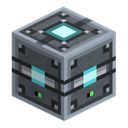
小型モブ忌避装置
小型モブ忌避装置は防衛用のブロックです。エネルギーネットワークに接続され、フィールドが有効な あいだ、周囲のゾーンから敵対モブが逃げ出し——クリーパーがネコから逃げるように——拠点へ近づけ なくなります。友好的な動物、村人、プレイヤーにフィールドは作用しません。中立モブ（エンダーマン、 ゾンビ化ピグリン）はすでに怒っている場合にのみ追い出されます。
LV
中型モブ忌避装置
中型モブ忌避装置は小型モブ忌避装置が成長した姿です：ゾーンの半径は 2 倍の 16 ブロック、消費は 32 EU/FE/t になります。フィールドの規則は同じで、敵対モブは逃げ出し、友好的な モブと挑発されていない中立モブは影響を受けません。
MVアップグレード
3
オーバークロックチップ I
オーバークロックチップは、機械のアップグレードパネルの専用アーム（上側、二重矢印の目印がある枠）に 入れるアイテムです。段階は I・II・III の三つ。これらは同じ物を重ねるのではなく三種類の別アイテムなので、 一台の機械で効くオーバークロックチップはちょうど一枚です。
統計チップ
統計チップは、機械のアップグレードパネルの右スロットに差し込むアップグレードアイテムです。 チップを装着している間、機械は自身の稼働を記録し、インターフェイスに要約パネルが表示されます。 ブロックが実際に稼働した時間、受け取った・消費した・発電したエネルギー、処理したアイテム数、 そして隣接して接続されている数がわかります。

消音チップ
消音チップは機械のアップグレードスロット（アップグレードパネルの第 1、アクティブスロット）に 差すアップグレードアイテムです。チップが装着されている間、機械は 完全に無音 になります： 連続する駆動音が消え、そのブロック自体の他の音も一切再生されません。チップを外すと音が戻ります。

部品
23
鉄の粉
マテリアルの形態 は、中間製品アイテムのファミリーです。粉、後に板、インゴット、ワイヤなど、マシンやレシピが鉱石やインゴットを変換したものです。第1フェーズで出会うのは 粉 だけです。粉砕機 がこれを出力し、「鉱石倍化」を実現します（鉱石ブロックまたは原石 → 粉2個 → インゴット2個）。

焼き入れ鉄
焼き入れ鉄 は、バニラの鉄インゴット1個を精錬して得られるインゴットです。レシピは厳密に1:1ですが、出力はすでに別の素材、「焼き入れられた」鉄で、これから鉄より少し優れたアイテムが作られます。

鉄の歯車
金属歯車 はクラフトコンポーネントのファミリーです: 石、鉄、金、銀。4つすべてが同じブランクである 木の歯車 を、そのレベルの素材で十字に囲んで組み立てます。これらはアイテムであり、ブロックではありません。材料としてのみ存在します。
電子回路
電子回路 はモッドの基本クラフトコンポーネントで、ほぼすべての初期（LV）マシンと貯蔵ブロックの「頭脳」です。これはアイテムであり、ブロックではありません。マシンのレシピには材料としてのみ登場します。

マシンケース
マシンケース は、マシンを組み立てる元になる基本ブロックです。8枚の鉄 板 から鍛造され（作業台で枠状）、その後LVマシンの本体になります。マシンのレシピはケース + 専用パーツです。これにより、インゴット → 板 → ケース → マシンという分かりやすいチェーンが構築されます。

銅コイル
銅コイル はクラフトコンポーネントです。銅ケーブルをスズの芯に巻き付けたものです。これはアイテムであり、ブロックではありません。レシピには材料としてのみ登場します。最初の用途は 電動ドリル で、そのレシピの最下段に2つのコイルが並びます。

電池
電池 はモッド内で最初のエネルギー媒体です。2 000 EU/FE の小さな蓄電池で、充電・放電でき、束ねて持ち運べます。また、クラフトコンポーネントでもあり、電池から エネルギーパック、電動ドリル、ジェットパック、フラックス織の防具 などその他の電装アイテムが組み立てられます。
LV
水車
水車の車輪はクラフト部品です。水車の車輪枠に取り付ける車輪で、枠が空のままだと 水車は発電しません。車輪は耐久値を持つ消耗品で（MOD-189、風車のローターと同様）、水車が実際に EU/FE を生み出して いる間だけ摩耗し（出力に比例）、耐久が尽きると壊れます。摩耗バーはインベントリと枠の両方に表示されます。

風力タービンのローター
風車のローターはクラフト部品です。任意の風車（T1 基本型、T2 高高度型／嵐型）のローター枠に取り付ける羽根で、 枠が空のままだと風車は発電しません。ローターは耐久値を持つ消耗品で（MOD-189）、風車が実際に EU/FE を生み出している…

ネットワークアナライザー
ネットワークアナライザー は携帯型の診断ツールで、オペレーター権限のないプレイヤー向けの /ala net コマンドの親しみやすい代替です。エネルギーを生産も保存もせず、ネットワークで何が起きているかを表示するだけです。

空のチップ
空のチップ はクラフトコンポーネントで、機能的なアップグレードチップが構築される土台となるベースブランクです。これはアイテムであり、ブロックではありません。それ自体では何もせず、マシンのアップグレードスロットにも セットできません（スロットはこれを拒否します）。唯一の役割は、本物のチップが組み立てられる共通の出発点であり、最初の1つは 消音チップ です。

太陽進化チップ
進化チップ は基本のT1形態をT2に変えるクラフトコンポーネントです。2つのバリアントがあります:

ゴム
ゴム は石油チェーンの最終産物です:
LV
高度な回路
高度な回路 は 電子回路 の第2段階であり、石油チェーンを最後まで進める初めてのパーツです。これはアイテムであり、ブロックではありません。MVティアのレシピでは材料としてのみ登場します。
MV
高度なマシンケース
高度なマシンケース は マシンケース と同じですが、一段上の段階で、中程度（MV）レベルのマシンはこの上に組み立てられます。通常のケースに 6枚の 焼き入れ鉄 の板 を上下から覆い、両脇に 2つの 高度な回路 を配してクラフトします（MOD-299）。
MVラポトロンクリスタル
ラポトロンクリスタル は直接クラフトできません。作業台が渡すのはブランクです。EU/FE バッファを持ち、 どの充電スロットでもエネルギーを受け取りますが、一切返しません。バッファが満たされた瞬間に ブランクは消え、代わりに完成したクリスタルが現れます。
HV
複製チップ
変異チップは、インキュベーターの動作モードを切り替える三つの アイテムです。チップは専用のスロットに入れます。スロットが空なら機械はそもそも起動しません。 モードを自分で選ぶことはないからです。

共鳴の欠片
変異産物は、どのチェストにも鉱石にもクラフトにも存在しない素材です。 インキュベーターだけがこれらを生み出します。二つのグループに 分かれます。

ランダム転移チップ
共鳴チェーンは互いから作られる 3 つのアイテムで、目的はただ一つ—— テレポート装置に、プレイヤーを世界のランダムな地点へ飛ばす力を 与えることです。

共振クリスタル
共振クリスタル は直接クラフトできません。作業台が渡すのはブランクです。EU/FE バッファを持ち、 どの充電スロットでもエネルギーを受け取りますが、一切返しません。バッファが満たされた瞬間に ブランクは消え、代わりに完成したクリスタルが現れます。
HV
エネルギー塊 I
エネルギー塊は、エネルギー凝縮器が電力網の余剰を 固めたものです。放っておけば消えてしまうはずだったエネルギーです。ティアは I・II・III の 三つあり、同じアイテムの重なりではなく、それぞれ別のアイテムです。

フラックス織布
フラックス糸とフラックス織布は同じ素材の二段階であり、 フラックス織布の防具への唯一の道です。連鎖は短く、一方通行です。
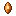
エネルギークリスタル
エネルギークリスタル は直接クラフトできません。作業台が渡すのはブランクです。EU/FE バッファを持ち、 どの充電スロットでもエネルギーを受け取りますが、一切返しません。バッファが満たされた瞬間に ブランクは消え、代わりに完成したクリスタルが現れます。
MV
ゲームアイテム
22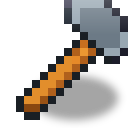
鍛冶ハンマー
鍛造ハンマーは機械による自動化が現れる前に金属プレートを作るための早期段階の手動ツールです。作業台にハンマーとインゴットを置くと、その金属のプレートが得られます。ハンマーは材料として消費されず、クラフトグリッドに残り、プレートごとに 1 ポイント…

レンチ
レンチは消費されず、2つのことができます。アイテムパイプの面の向きを設定することと、本MODのブロックを解体することです。

焼き入れ鉄のツルハシ
焼き入れ鉄のツルハシは Ala Industrial MOD初の手動ツールです。MODの焼き入れ鉄から通常のツルハシのパターンで作業台でクラフトします。

Tempered Iron Tools
焼き入れ鉄の道具は Ala Industrial MODの5つの手持ちツールのセットです。ツルハシ、斧、クワ、シャベル、剣。それぞれがバニラの対応物と同じようにクラフトされますが、鉄インゴットの代わりにMODの焼き入れ鉄を使います。

焼き入れ鉄のチェストプレート
焼き入れ鉄の防具は4つのアイテムからなる完全なセットです。ヘルメット、チェストプレート、レギンス、ブーツ。各部位は対応する鉄製のものより耐久値が高く、焼き入れ鉄で修理できます（タグ tempered_iron_armor_materials 経由）。防御値は鉄よりわずかに高いですが、ダイヤモンドより低く、ゲーム序盤と終盤の中間に位置します。

Scythe
大鎌は装飾植被の迅速なクリアリングと収穫を行う手持ちツールです。ブロックを右クリックすると、前方の平らな範囲内の適切な植被——葉、草、花、シダ、キノコ、ツタ、根、苗木——をすべて刈り取り、各ブロックを手で壊したのと同じ通常ドロップを落とします。Shift を押しながらだと、大鎌が AOE…

バッテリーポーチ
バッテリーポーチは本MOD初の電力アイテムです。バニラのバンドルと同じように使える携帯収納で、容量は2倍になり、充電が必要になります。インベントリのスロット1つ分だけで 128 の重さ のアイテム（一般的なブロックで約2スタック分）を収納でき、長距離遠征やインベントリが圧迫されがちな場面で重宝します。
LV
真空カプセル
真空カプセルはスタック可能な液体コンテナです。バニラのバケツの問題を解決します。バケツはスタックできず、バケツごとにスロットを占めるため、大量の液体を運ぶのが不便です。

電動ドリル
電動ドリルは本MOD初の手持ち電動ツールです。耐久値の代わりに EU/FE で動くダイヤモンドのツルハシです。ブロック1つあたりの充電が足りている間、ドリルはダイヤモンドのツルハシよりわずかに速く（速度 8.5 対 8.0、採掘レベルはダイヤモンド）採掘し、正常に破壊したブロックごとに 50 EU/FE を消費します。満充電時のバッファは 10 000 EU/FE…
LV
電動シャベル
電動ショベルは本MOD3つ目の手持ち電動ツールで、電動ドリル（石）と電動チェーンソー（木）に続く土担当のツールです。耐久値の代わりに EU/FE で動作します。ブロック1つあたりの充電が足りている間、ショベルは #minecraft:mineable/shovel をダイヤモンドのシャベルより速く（速度 9.0 対 8.0）採掘し、正常に破壊したブロックごとに…
LV
電動チェーンソー
電動チェーンソーは本MOD2つ目の手持ち電動ツールで、木材における電動ドリルの鏡像です。耐久値の代わりに EU/FE で動く斧です。ブロック1つあたりの充電が足りている間、チェーンソーは #minecraft:mineable/axe をダイヤモンドの斧より速く（速度 9.0 対 8.0）伐採し、正常に破壊したブロックごとに 30 EU/FE…
LV
電動クワ
電動クワは同ラインの4つ目で最後の手持ち電動ツールです。ドリル（石）、チェーンソー（木）、ショベル（土）に続いて、農地を担当します。契約は同じで、耐久値の代わりに EU/FE で動作し、壊れず、放電時は素手速度でフルドロップとともに動作し続けます。
LV
電磁石
電磁石は EU/FE で充電できる利便性アイテムです。インベントリの任意のスロット（ホットバー／メイン／オフハンド）に配置され、周辺の落ちているドロップアイテムをプレイヤーに自動的に引き寄せます。坑内での鉱石ドロップ、爆発後の破片、他人の放置ドロップなどが対象です。これは ティア 1 で、5 ブロックの球状半径（上下・左右）を持ち、実際に移動したアイテムごとに…
LV
エネルギーパック
エネルギーパックは装着可能なエネルギーバッファです。チェストプレートのスロットに装備し、着用している間、毎秒インベントリ内のすべての電力アイテムを充電します。現在、そのようなアイテムはバッテリーポーチのみです。パックを背負えば、ポーチは遠征中にゼロまで放電してロックされることはありません。
LV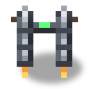
ジェットパック
ジェットパックは飛行用の装着可能な EU/FE アイテムです。（防具の代わりに）チェストプレートのスロットを占め、30 000 EUのバッファを搭載します。空中でジャンプを押し続けると、エンジンが上向きの推力を与え、50 EU/FE/ティックを消費します。満充電で約 30 秒間…
LV
フラックス織のチェストプレート
フラックスウィーブ防具は本MOD初の完全な EU/FE セットであり、繊維 → フラックスの糸 → フラックス織布という連鎖の到達点です。これはタンクではなく、ユーティリティスーツです。防御は鉄レベルで、プレイヤーはアイテムに充電がある間オンになるボーナス一式のために支払います。
LV
風速計
風速計はエネルギー不要の手持ち機器です。建てるわけでも、何かを生産するわけでもありません。あなたが立っている地点の風速を示します。風力タービン用の塔を建設前に選ぶためであり、3回も解体して建て直すためではありません。

テレポーターリモコン
テレポーターリモコンは携帯型ビーコンアイテムです。Shift+右クリックでテレポーター局とペアリングし、その後プレイヤーを局へジャンプさせます。リモコン自体は EU/FE を保持せず、ジャンプのエネルギーは充電されたターゲット局から差し引かれます。
LV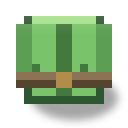
絶縁チェストプレート
絶縁一式はヘルメット・上着・レギンス・ブーツの四点からなり、通電した裸線の感電を防ぐ装備です。これは 防具ではありません。防御力は革相当で、プレイヤーが手に入れるのは数値ではなく、まだ配線を絶縁する手段が ない段階でも生きた電線のまわりで作業できる、という一点です。
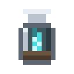
魂の器
魂の器は、銀の枠にはめられたガラスのフラスコで、底にソウルサンドが入っています。器が インベントリにあるあいだ、あなた自身が——あなたの手で、あなたの剣で、あなたの矢で——倒した 敵対モブは、その魂を器へ渡します。ペットや罠による撃破、他人による撃破は数えられません。

遮蔽チェストプレート
遮蔽スーツはフード・ジャケット・ズボン・ブーツの4部位からなり、放射線に対する唯一の装備です。 これは防具ではありません。防御力は革と同等で、買っているのは数値ではなく、ウランや稼働中の 原子炉に近づいて生きて戻る手段です。

電動サーベル
電動サーベルは電力装備ラインの5つ目のアイテムで、初の武器です。ドリル（石）、チェーンソー（木）、ショベル（土）、クワ（農地）に続いて、戦闘の番です。ラインの契約は同じで、耐久値の代わりに EU/FE で動作し、壊れず、充電ゼロではオフになるのではなく性能が低下します。
LV